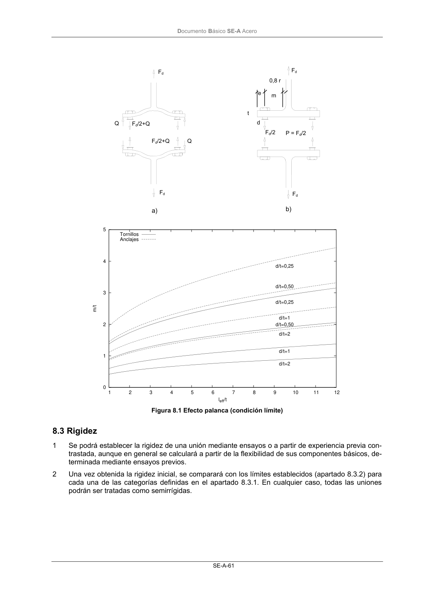

DB-SE-A · 8.3 Rigidez · versión 2007-10-23 · capa oficial
Formatos: JSON compacto · Markdown · PDF fuente
Ámbito del documento · texto del ámbito · documento y tablas
ID técnico a0105 · PDF pág. 63-64 · jerarquía no validada por persona · contrastado con el literal de la página 63 (candidato tipográfico); no validado por persona · padre: raíz
8.3 Rigidez 1 Se podrá establecer la rigidez de una unión mediante ensayos o a partir de experiencia previa con- trastada, aunque en general se calculará a partir de la flexibilidad de sus componentes básicos, de- terminada mediante ensayos previos. 2 Una vez obtenida la rigidez inicial, se comparará con los límites establecidos (apartado 8.3.2) para cada una de las categorías definidas en el apartado 8.3.1. En cualquier caso, todas las uniones podrán ser tratadas como semirrígidas. t e d P = Fd/2 0,8 r Fd/2 Fd Fd Fd Fd/2+Q Fd/2+Q Q Q Fd a) b) m DocumentoBásico SE-A Acero SE-A-62

PDF fuente redistribuible: copia fiel enlazada en esta página (SHA256 verificado).